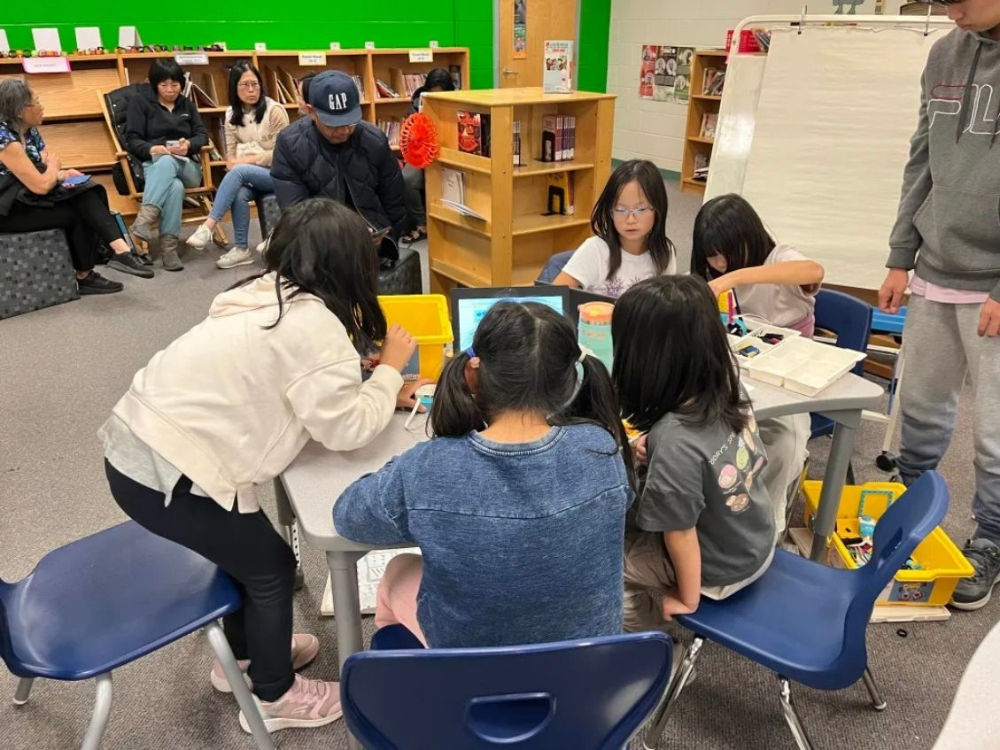
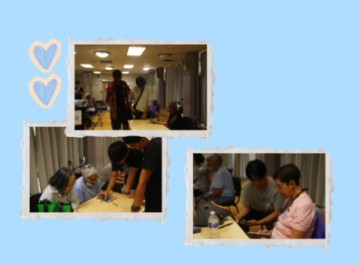
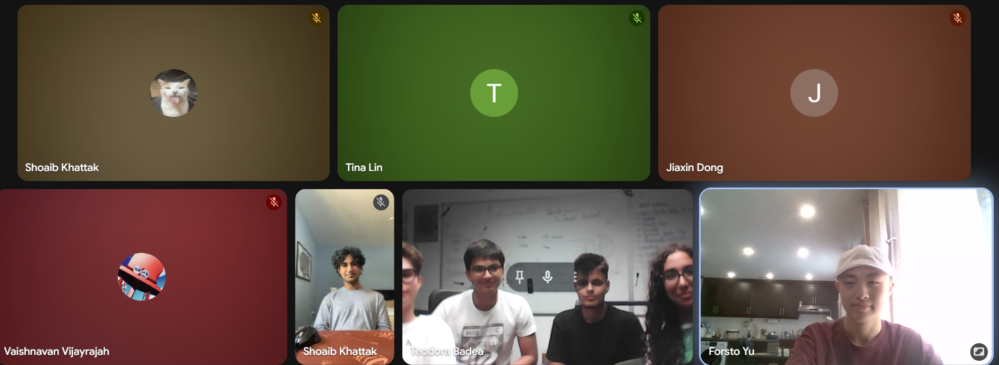
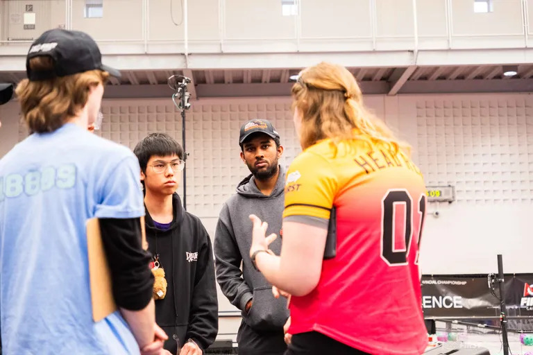
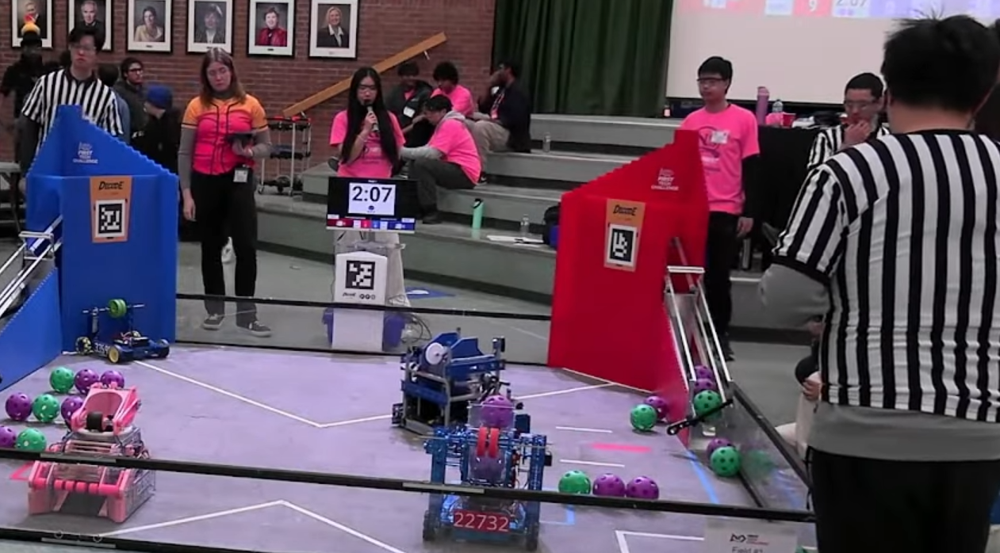
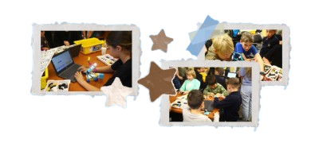
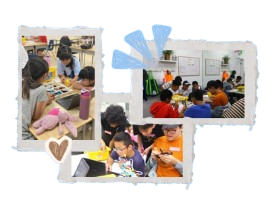
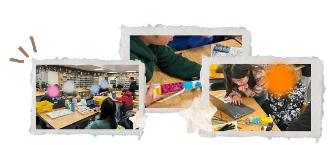
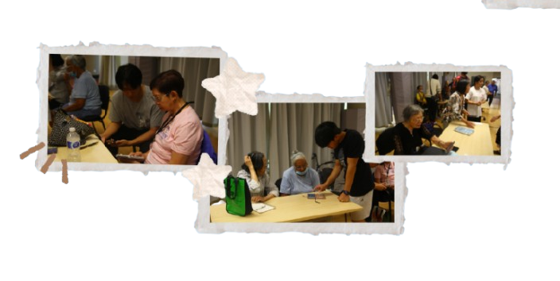
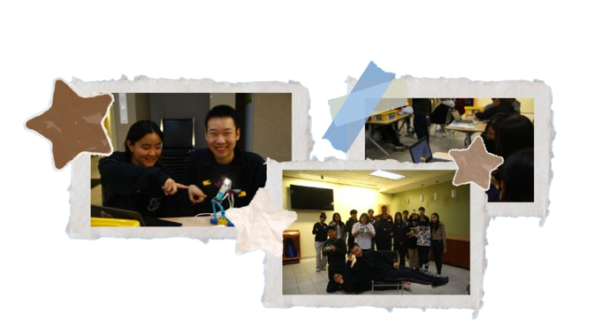

Activity:
Our team ran extensive robotics programs across the GTA, using LEGO SPIKE
Prime Sets. Using LEGO Spike Prime kits, we guided students through building,
block coding, and problem-solving challenges every day, creating a hands-on,
supportive, and engaging environment.
Impact:
Our workshops reached 500+ students, introducing learners of all ages to STEM
in an accessible and empowering way, showing that robotics can be both fun and
a pathway to new opportunities

Activity:
Our team taught cybersecurity and helped seniors feel more confident being online.
Additionally, we introduced them to STEM by sharing our team’s work and guiding
them through simple LEGO Spike Prime projects.
Impact:
Teaching cybersecurity became a way to both protect and empower them. We had meaningful
opportunities to connect with seniors at several Carefree Lodge locations. We were able
to support seniors from Beverly Glen, AgeCare, Bethany Lodge, and Chartwell Westney Gardens.

Activity:
Throughout the season, our team connected with over 55 FTC teams internationally to learn
about their experiences, values, and goals. During these calls, we shared our challenges,
compared approaches, and learned from one another’s journeys.
Impact:
Through these conversations, we gained a deeper understanding of the design processes and
systems that help teams succeed in their respective countries. These experiences allowed
all of us to strengthen different aspects of our team, creating valuable learning opportunities
and fostering a strong sense of global community.

Activity:
This year, our team mentored Daedabyte, CyberLyons, and Storm Bots. Our workshop at L’amoreaux
Community Center gave us the chance to teach these teams in a real, hands-on environment how to run
a smooth robotics workshop. Another outreach session at Lyon Mackenzie CI allowed us to support CyberLyons
and share our knowledge even further.
Impact:
Due to the number of teams we mentor, we are able to be in constant contact with multiple FTC teams in our
area, which creates a community. We are all in a Discord server where we can discuss potential workshops with
one another, share ideas, and strengthen the FIRST community.

Activity:
We hosted the Winter Fiesta at our school along with our two sister teams. We provided a friendly yet competitive
environment for teams to practice for their future competitions. Additionally, we played a key role in the North
Scarborough Qualifier. We acted as game announcers, queuers, practice field attendants, and field resetters.
Impact:
Our previous experience from the Winter Scrimmage allowed for the qualifier to run smoothly and gave us first-hand
experience with running an FTC competition.
An initiative founded by BudjetTech, supporting and working alongside anti-discrimination organizations in the fight against inequality. Below are some of the workshops we ran this year.

As part of Robots Against Racism, we partnered with ClinkYouth to support Ukrainian refugee families. Using LEGO Spike Prime kits, we created hands-on STEM workshops where children could explore building and block coding. The sessions taught foundational STEM skills while giving youth a space to feel seen, supported, and empowered, reflecting our mission to make robotics accessible for all!

During our summer outreach, we led a three-day robotics workshop with Positive Tutorial School, introducing elementary students to STEM using LEGO Spike Prime kits. Students explored building, coding, and problem-solving in a welcoming environment. Many had little prior exposure to robotics, and the workshop showed how STEM can be fun, approachable, and empowering for youth from diverse communities.

Kicking off the 2026 year, our team collaborated with Autism Ontario to provide multiple STEM sessions for children and teens with special learning needs. We used FLL spike kits to engage with students and to introduce them to the world of STEM, robotics, and FIRST. Our first session on February 5th was extremely successful! Students were engaged, learning, and having an amazing time. We look forward to our second session with Autism Ontario in March!

Kicking off our outreach this year, we visited several long-term care homes and supportive living facilities for seniors with disabilities, both locally and in Ajax. We helped residents learn about internet safety, provided one-on-one assistance with devices, and brought FLL Spike kits for those interested in exploring robotics. Our sessions focused on giving seniors hands-on learning opportunities and showing them they’re not forgotten and its never too late to do robotics!

We partnered with the Chinese Canadian National Council Toronto Chapter to run STEM workshops for local youth. Using LEGO Spike kits and hands-on activities, we introduced students to building, coding, and problem-solving in a fun, confidence-building environment. The sessions gave students a chance to explore STEM, ask questions, and feel supported while discovering what robotics and FIRST can offer.